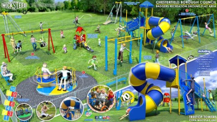
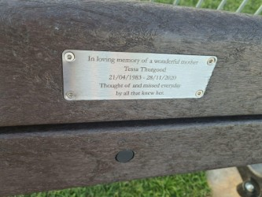
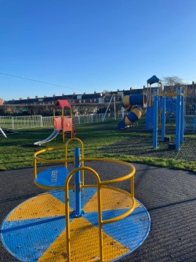
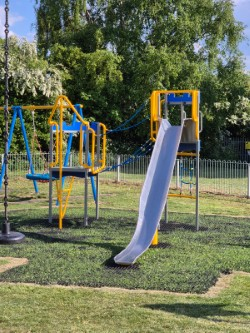
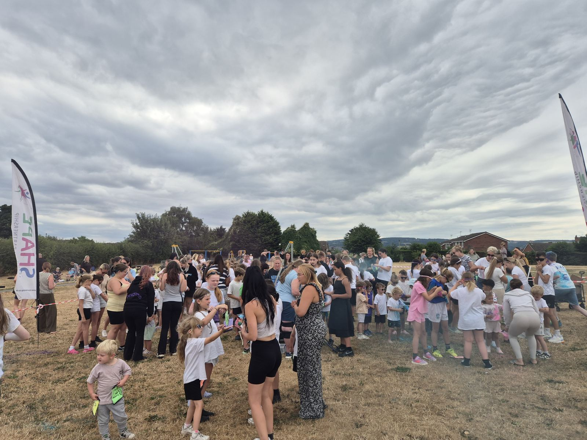
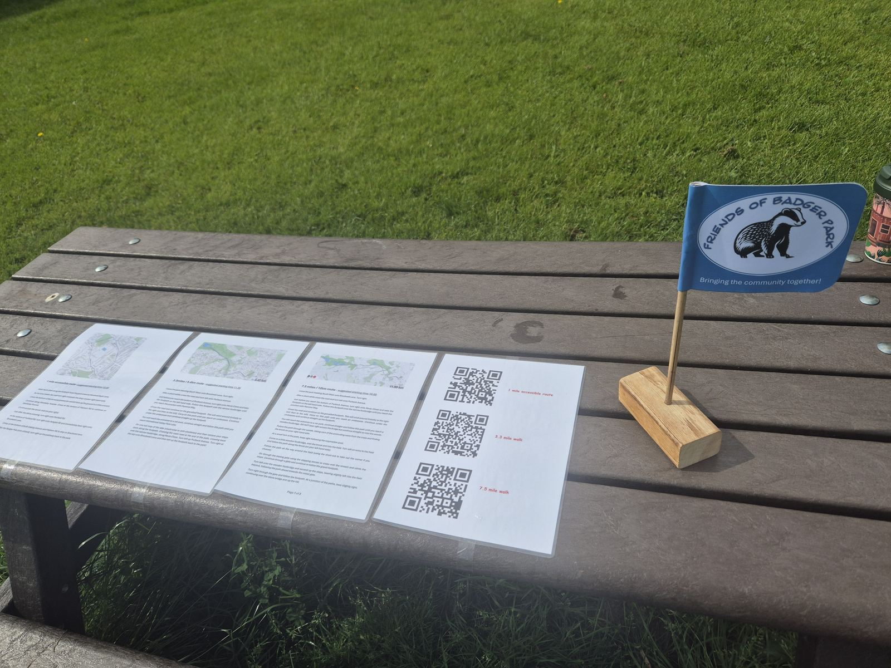
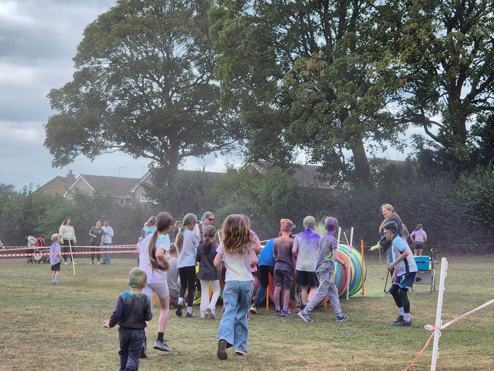
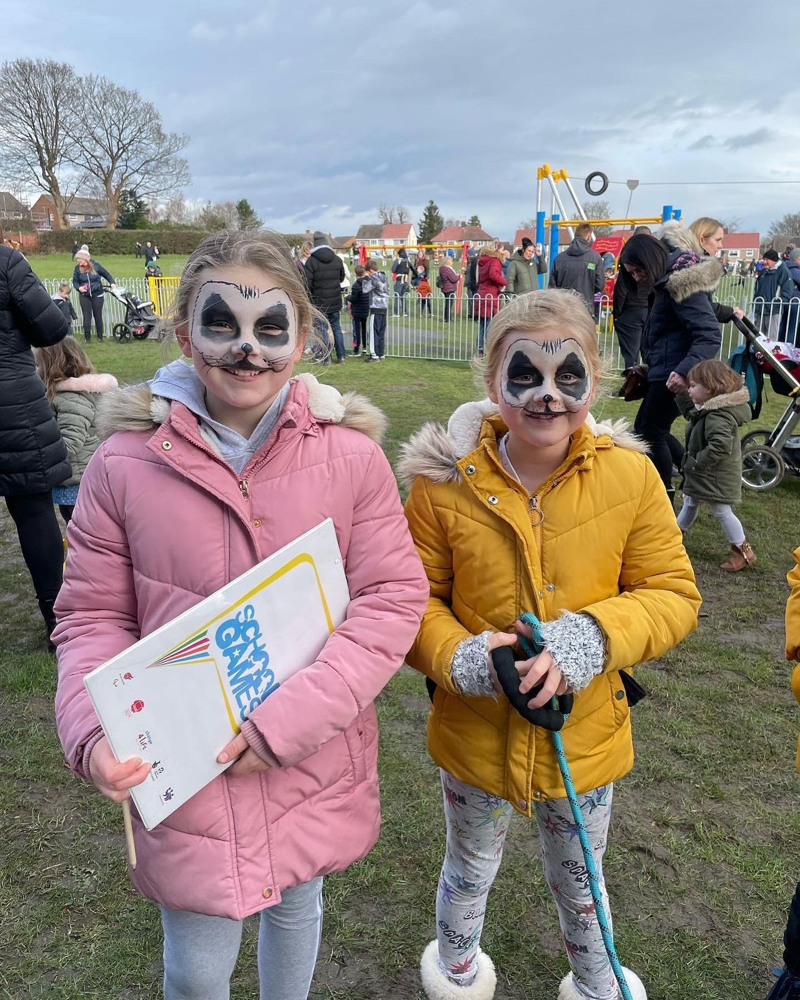
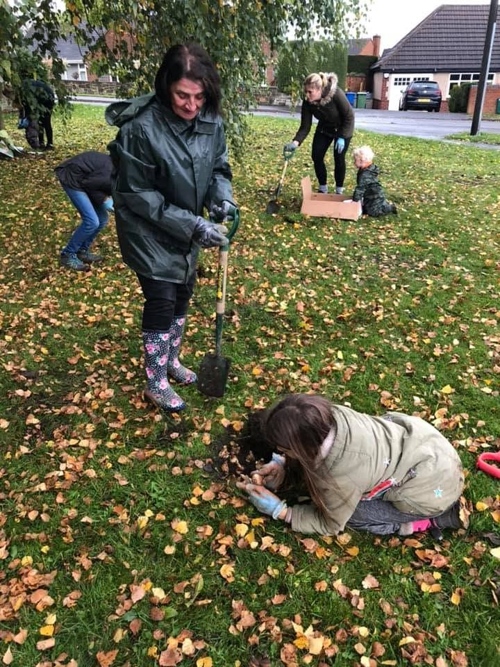

🎨🏃
Summer
Colour Run
A colourful day of running, laughing and getting messy — raising money for the park and our community.
Find out more →Events, activities and projects bringing our local community together — with the money we raise going back into the park and the people who enjoy it.
We organise family-friendly events throughout the year. Come along, have fun, meet your neighbours and help us raise funds for future community projects.
A colourful day of running, laughing and getting messy — raising money for the park and our community.
Find out more →Spooky family fun, costumes and community spirit — with fundraising supporting future activities.
Find out more →From family activities to projects that improve the park, there is always more we can do together.
View all events →It's a simple cycle: bring people together, raise funds and put that support back into the community.
Community events and activities for families, children and everyone who enjoys Badger Park.
Fundraising through events and community activities helps us support future projects.
The money raised helps us improve Badger Park and create more opportunities for the community.
Since 2020, local people have helped Friends of the Badger Park turn ideas into real improvements for everyone who uses the park.
Friends of the Badger Park was formed with one clear goal: to help replace the playground equipment that was due for demolition in August 2020.
FOBP managed to raise over £8,000. Later came the news we had been hoping for: Chesterfield Borough Council confirmed that Badger Park would get a new playground.

The new playground was finished — a fantastic achievement made possible by fundraising and support from the local community.


The playground slide was replaced after the original was burned due to vandalism.
FOBP also proposed a walking path between Brockwell Lane and Newbold Back Lane. With strong community support, the proposal was accepted and the path was installed in March 2025.

After a number of incidents of vandalism and damage to equipment at the park, a CCTV camera was installed to help protect the facilities.
Events, families, volunteers and the park we all share.





Whether you volunteer, come along to an event, help us fundraise or simply spread the word — every little bit helps.